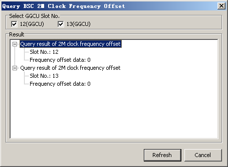

This describes how to query the status of the BSC 2 MHz clock reference for the GGCU.
Prerequisites
- The LMT runs normally.
- The communication between the LMT and the BSC is normal.
- The GGCU is running properly.
Procedure
- Through GUI
- On the LMT, choose .
- Set parameters in the Select GGCU Slot No. area and then click Refresh. The query results are displayed, as shown in Figure 1.
Figure 1 Querying the clock reference status
- Click Cancel to end the query.
- Through MML
- Run the DSP GCU2MFD command on the Local Maintenance Terminal to query 2 MHz clock frequency offset of the GGCU.
Copyright © Huawei Technologies Co., Ltd.